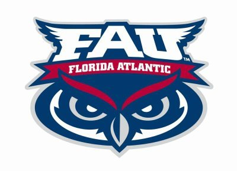

NHA TRAN
Education
|
Work Experience
|
Skills
|
Achievements
Fort Lauderdale, FL
754 - 779 - 6415
ntran2020@fau.edu
EDUCATION
Stranahan High School
|
Fort Lauderdale
GPA: 3.85/4.0
08/2014 – 06/2017
Former member Math Club and assisted students with after school learning.
Former member National Honor Society and Mu Alpha Theta.
Community service hours requirements completed.
Graduated with honors.
Broward College
|
Davie, FL
GPA: 4.00/4.00
08/2017 – 12/2019
Former member of Student Government
(Fall 2017)
Associate of Arts Degree
(December 2019)
Florida Atlantic University
|
Boca Raton, FL
GPA: 3.98/4.00
01/2017 – PRESENT

Currently enrolled as a Computer Science (BS) major at
FAU
WORK EXPERIENCE
Certified Tutor
|
Broward College
01/2018 – PRESENT
Tutor students in advanced Mathematics and general study assistance.
Successfully completed
CRLA
National Tutor Training.
Work with supervisor and co-workers to implement the Academic Success Center policies.
SKILLS
• Proficient in Microsoft Office
• Bilingual English / Vietnamese
• Excellent time management
• Well organized
• Strong work ethic
• Cooperative team player
• Analytical
• Detail-oriented
AWARDS AND HONORS
President's List GPA 4.0
Broward College
(2017-2019)
Outstanding Accomplishment Certification Mathematics Department Broward College
(2019)